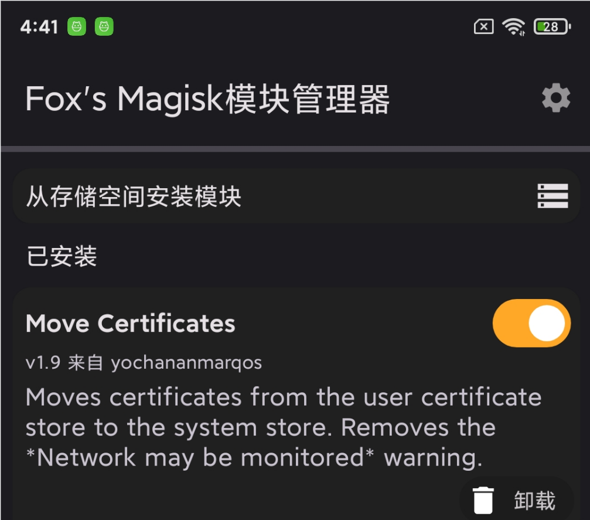

Andriod抓包之证书导入
Andriod抓包之证书导入
将Burp证书导入安卓系统CA
有些app必须安装在较高版本的安卓系统上面，但是在较高的系统上却无法抓包。从android Nougat开始，Android更改了对用户安装证书的默认信任行为。默认情况下app不会信任用户安装的CA，除非app有明确说明，否则应用程序将只会信任系统级别的CA。
由于安卓10采用了某些安全策略，将系统分区/system挂载为只读，就算你root了也没用，无法写入系统分区也就无法导入系统证书，在使用http-canary、burp软件抓包分析的时候，很多app只认系统证书，不认用户证书。唯一的方法是魔改安卓10的rom，或者使用magisk的一些模块，如magisk的Move Certificates模块。
方法一
0x01
下载Burp证书
导入证书，这时证书是安装到了用户区
0x02
在Magisk上安装Move Certificates模块，安装成功后用户分区的所有证书默认会导入到系统分区
Move Certificates下载地址：
https://github.com/Magisk-Modules-Repo/movecert
下载成zip之后直接用这个FoxMagiskModuleManager安装
FoxMagiskModuleManager下载地址：https://github.com/Fox2Code/FoxMagiskModuleManager/releases
下载FoxMagiskModuleManager，安装到手机
完成基础设置后，点击从存储空间安装模块，安装Move Certificates
安装完成后，会重启，重启之后就已经安装好了

这时再看，证书已经移到系统区了
用BURP抓app(小米商城),成功
本博客所有文章除特别声明外，均采用 CC BY-NC-SA 4.0 许可协议。转载请注明来自 Z1bra@Blog！